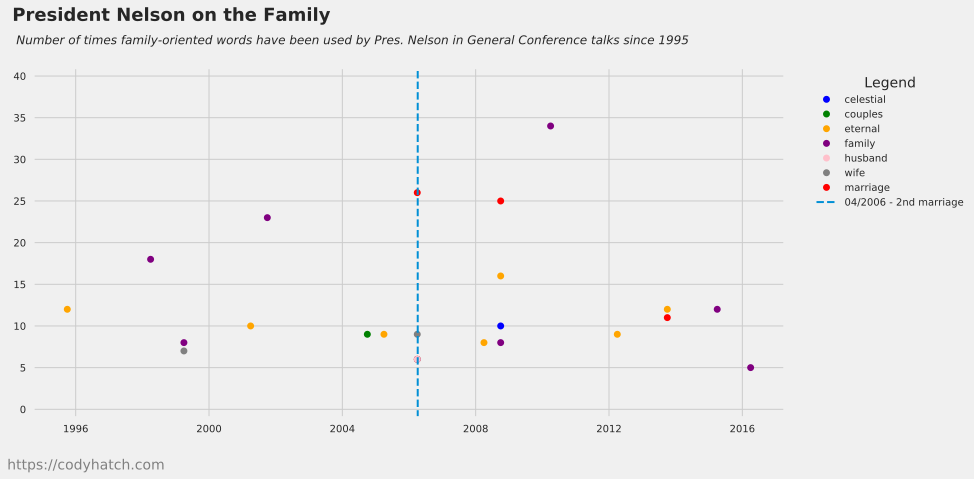

Analyzing LDS President Russell Nelson Talks About Family
Several friends and I were recently discussing whether Wendy Watson Nelson has affected the topics about which LDS President Russell Nelson has chosen to speak, so I decided to perform a quick analysis of his General Conference talks going back to 1995.
First, though, for those unfamiliar with why we would be interested in this question, I’ll give a bit of background. According to LDS Newsroom, President Russell Nelson and Wendy Watson Nelson were married April 6, 2006. Wendy Watson was President Nelson’s second wife. His first wife was Dantzel White Nelson, who died February 12, 2005.
Sister Wendy Watson Nelson was a professor of marriage and family therapy at BYU prior to her marriage to President Nelson, and had written several books about relationships, marriage, and family. Since they have been married, she, along with President Nelson, has spoken at several firesides and face-to-face events, most recently in Las Vegas, Nevada. She frequently provides marriage and relationship advice at these events. She is highly educated, has teaching experience in these topics, is willing to speak frequently on these topics, and is much younger than President Nelson. Naturally, we were curious as to what type of influence, if any, she might have on President Nelson’s talks.
Since President and Sister Nelson were married in April 2006, in performing my analysis I had initially thought I’d grab all of President Nelson’s talks going back to 1995 so as to get a similar number of years pre-marriage as there are available post-marriage; however, I was unable to find any way on lds.org to sort President Nelson’s talks chronologically. I had considered sucking down all of his talks from the site and sorting them myself, but was reluctant to do so due to potential loads that might place on the Church’s web servers (there are a lot of talks). It just seemed like I’d be crossing some line, so I settled on General Conference talks. I downloaded all of President Nelson’s General Conference talks going back to April 1995 and ran them through a tool that performs a word count on the text. I kept the top ten words used in each talk and added them to a data frame within a Python program. Finally, I filtered the talks for words associated with marriage and family (the areas of Sister Nelson’s expertise), and then graphed them on a time series chart along with a reference line for the Nelson’s marriage.
